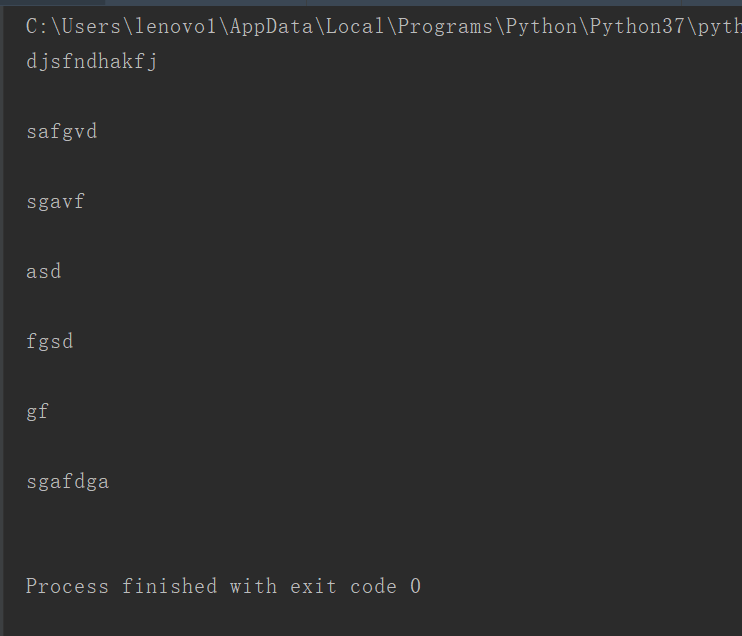
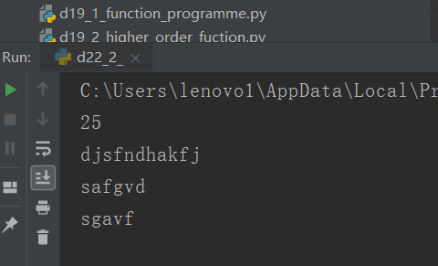
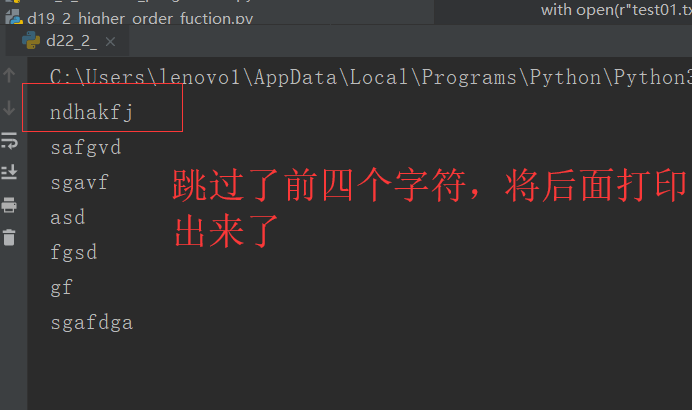

原文出处:本文由博客园博主心悦君兮君不知-睿提供。
原文连接:https://www.cnblogs.com/ruigege0000/p/11234855.html
原文连接:https://www.cnblogs.com/ruigege0000/p/11234855.html
一、
函数list
（1）定义：用打开的文件作为参数，把文件内的每一行内容作为一个元素
（2）格式：list（文件）
（3）例子：
with open(r"test01.txt",'r') as f:
l = list(f)
for line in l:
print(line)

2.函数read
（1）作用：按照字符进行读取文件内容
（2）格式：文件.read(数字) 如果数字缺省，那么代表把所有的字符全都读出来；如果里面含有数字那么代表一次性读取这么多字符
（3）注意：允许输入参数读取几个字符，如果没有指定，那么从当前位置读取到结尾，否则从当前位置读取指定个数字符
（4）例子：
with open(r"test01.txt",'r') as f:
strChar = f.read(25)
print(len(strChar))
print(strChar)

3.函数seek
（1）定义：移动文件读取位置
（2）格式：seek(offset,from)
from的取值范围：
0：从文件头开始
1：从文件当前位置开始偏移
2：从文件末尾开始偏移
移动的单位是字节（byte)
一个汉字由若干个字符组成
（3）例子：
with open(r"test01.txt",'r') as f:
f.seek(4,0)
strChar2 = f.read()
print(strChar2)

二、源码：
d22_2
地址：https://github.com/ruigege66/Python_learning/blob/master/d22_1_file_analysis.py
2.CSDN：https://blog.csdn.net/weixin_44630050（心悦君兮君不知-睿）
3.博客园：https://www.cnblogs.com/ruigege0000/
4.欢迎关注微信公众号：傅里叶变换，后台回复”礼包“，获取大数据学习资料